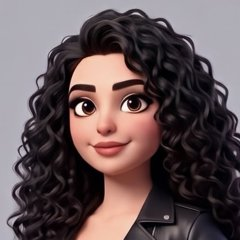

روی دکمه بزن، پرامپت کپی میشه. بعد توی Nano Banana Pro، GPT Image یا Seedream پیستش کن.
عکسی که قبلاً با هوش مصنوعی ساختی رو آپلود کن و این رو کنارش بذار. صورت و صحنه عوض نمیشه، فقط واقعی میشه.
Edit the attached image. Keep it exactly the same, but make it look like a real, unretouched RAW photograph instead of an AI-generated image. PRESERVE (do not change anything here): the person's identity, face shape, facial features, expression, pose, hair style and color, clothing, accessories, background, composition, crop, camera angle, and overall color palette. CAMERA LOOK: Sony A7R V, Sony FE 90mm f/2.8 Macro G OSS lens, shot at f/3.2, ISO 200, 1/200s, natural soft light, straight-out-of-camera RAW with minimal processing. Real optical depth of field with natural focus falloff, true-to-life warm color, natural contrast and a very subtle fine film-like grain. SKIN (this is the main change): - Clearly visible natural pores on the nose, cheeks, forehead and chin - Uneven, non-uniform skin texture, with no smooth, glossy, waxy or plastic surface - Fine vellus hair (peach fuzz) catching the light, plus baby hairs at the hairline - Individual eyelashes and eyebrow hairs with natural irregularity - Subtle freckles, tiny blemishes, and fine lines around the eyes and mouth - Natural lip texture with fine vertical lines - Natural skin tone variation: slight redness around nose and cheeks, subtle under-eye shadow and texture - Realistic specular highlights on the skin, not shiny or oily AVOID: beauty filter, skin smoothing, airbrushing, heavy sharpening, HDR look, symmetrical perfection, over-clean image, stylization, any change to the face or the scene. Output a photorealistic image at the same framing and aspect ratio as the original.
برای ساختن عکس واقعی از صفر. بعد از کپی، جاهای داخل [براکت] رو با مشخصات خودت (به انگلیسی) عوض کن.
OPTIONAL (only if you upload your own photo): Use the face in the attached photo as the exact identity. Keep face shape, features and skin tone 100% the same. Ultra-realistic close-up portrait photograph of [SUBJECT: a woman in her mid-20s], [HAIR: light-brown wavy hair with honey highlights], loose strands framing the face, [EYES: warm hazel-brown eyes] looking straight into the camera, [EXPRESSION: calm neutral expression, lips slightly parted]. Wearing [OUTFIT: an oversized fluffy violet mohair sweater pulled up around the head like a soft hood]. Pose: [POSE: arms raised and resting on top of the head]. Setting: [BACKGROUND: plain warm off-white wall, soft daylight from a large window on the left]. Framing: [FRAMING: tight head-and-shoulders, face centered], vertical [RATIO: 4:5]. CAMERA: Sony A7R V, 90mm macro lens, f/3.2, ISO 200, 1/200s, natural soft light, straight-out-of-camera RAW look with minimal processing. Real optical depth of field: eyes razor-sharp, edges softly out of focus. True-to-life color, natural contrast, very subtle fine film grain. SKIN: clearly visible natural pores on nose, cheeks, forehead and chin; uneven, non-uniform texture; [FRECKLES: light natural freckles]; fine peach fuzz catching the light; baby hairs at the hairline; slight redness around the nose; faint under-eye texture; fine lines around eyes and mouth; natural lip texture with fine vertical lines; soft realistic highlights, never oily. HAIR: individual strands, natural flyaways, slightly imperfect, not perfectly styled. FABRIC: individual fibers and threads, real knit or weave texture, soft natural folds and shadows. AVOID: beauty filter, skin smoothing, airbrushing, plastic or waxy skin, HDR look, heavy sharpening, perfect symmetry, heavy makeup, stylization, cartoon look, text, logo, watermark.